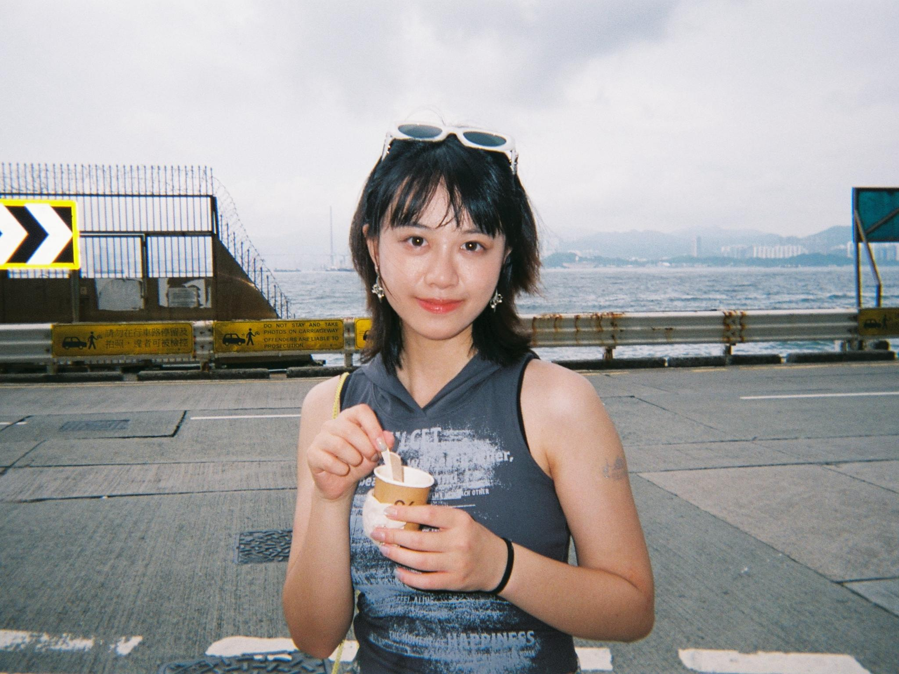

New York, NY / A background in Shanghai, a perspective across markets.

Yiyun Shen 沈逸云
01 / LEARNING
Education
From language and literature to marketing science.
Columbia Business School
2026–2028
MS, Marketing Science · February 2028
New York, NY
Related coursework: Advanced Marketing Analytics, Generative AI for Business, Python Programming for Data Science, Statistical Modeling and Decision Making, Marketing Consulting Skills
Member: AI Club, Product Marketing Club, Outdoors Club
East China Normal University
2022–2026
BA, English Literature · June 2026
Shanghai, China
Minor: Finance (GPA: 3.8/4.0, Top 10 of the class)
Honors: National Scholarship for 2024–2025 Academic Year; GPA: 3.9/4.00 (Rank 1st of class)
Leadership: Co-President of Spanish Club; Peer Career Advisor
02 / DOING
Experience
Turning research and analysis into practical next steps.
SHEIN
Spring & Summer 2026
Strategy Analyst Intern
Shanghai, China
Tracked competitors’ weekly GMV, AOV, and other core performance metrics across 15 key markets, building and maintaining online dashboards to visualize market-level trends and support ongoing business monitoring.
Conducted desk research on specific topics, covering DSP/SSP ecosystems in North America and self-operated retail strategies such as JD.com; synthesized findings into recommendations for platform and product strategy.
Leveraged AI to automate competitive-monitoring workflows, building reusable AI skills to retrieve competitor pricing and DAU data, consolidate results into Excel, and generate standardized reports; improved workflow efficiency by 80%.
Byte Dance
Summer & Fall 2025
Strategic Operations Intern
Shanghai, China
Analyzed GMV contribution and growth patterns of newly onboarded Mall sellers, identifying performance gaps and recommending targeted operational interventions, which contributed to 0.2/5.0 seller rating raise and 2% GMV growth.
Leveraged AI to streamline the Mall onboarding workflow and revamp the review process, reducing review time by 40% and increasing Mall onboarding penetration from 9% to 12%.
Coordinated Mall sellers’ participation in major promotional campaigns; managed homepage banner placements and negotiated promotional resources; partnered with the product team to launch an automation tool to facilitate seller application process.
Estée Lauder
Summer 2025
Strategy Analyst Intern
Shanghai, China
Analyzed sell-in and sell-out data monthly to identify market preferences and consumer demands, supported forecast optimization with Demand Planning team for regional Marketing Director to define business ambitions.
Evaluated product performance across Sephora’s online channel and 50+ offline stores across the country during promotion periods, benchmarking competitor pricing and promotional strategies to support product pricing and trade marketing plans.
BAO Communications
Spring 2025
Public Relations Intern
Based in NYC · Remote from Shanghai
Identified and evaluated 100+ influencers across Instagram, YouTube, and TikTok based on client objectives, supporting influencer outreach, campaign execution, and performance assessment.
Collaborated with Nongfu Spring to produce and edit 20 short-form videos, generating 200K+ views and 10K+ engagements; designed and managed daily content publishing across multiple social media channels.
Atheneum
Spring 2024
Strategic Consulting Intern
Shanghai, China
Collected, structured, and visualized pharmaceutical market, industry, and competitor data across Asian markets using Excel, mapping hospital resources, physician profiles, and healthcare stakeholders to support market analysis.
Conducted expert interviews with healthcare professionals to gather primary insights on medical reimbursement systems, pharmaceutical registration requirements, and market dynamics, synthesizing findings into client-ready reports.
03 / MAKING
Projects
A selection of strategy, storytelling, and design work.